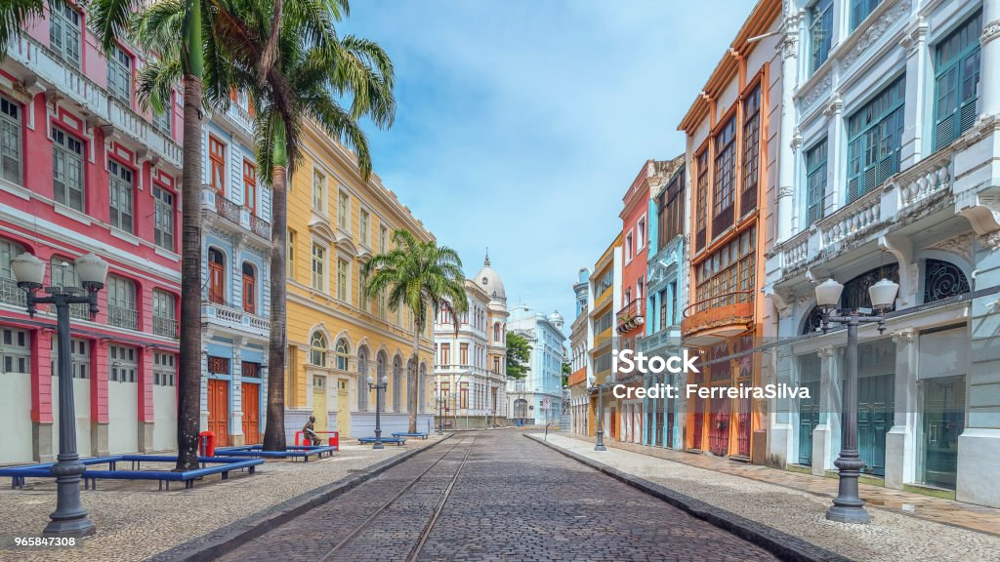

Seja bem vindo a cidade de Recife-PE
A capital da beleza
Recife é um município brasileiro, capital do estado de Pernambuco, localizado na Região Nordeste do país. Com área territorial de aproximadamente 218 km², é formado por uma planície aluvial, tendo as ilhas, penínsulas e manguezais como suas principais características geográficas.[3][7] Cidade nordestina com o melhor Índice de Desenvolvimento Humano (IDH-M), o Recife é a quarta capital brasileira na hierarquia da gestão federal, após Brasília, Rio de Janeiro e São Paulo, e possui o quarto aglomerado urbano mais populoso do Brasil, com 4 milhões de habitantes em 2017, superado apenas pelas concentrações urbanas de São Paulo, Rio de Janeiro e Belo Horizonte.[5][8][9] A capital pernambucana tem, num raio de 300 km, três capitais estaduais sob sua influência direta: João Pessoa (122 km), Maceió (257 km) e Natal (286 km).[10] Recife é a metrópole mais rica do Norte-Nordeste e sétima do Brasil, articulando, em sua região geográfica intermediária, 71 cidades, que somam um PIB de 135 bilhões de reais.[6][11][12] Já o município isoladamente detém o décimo terceiro maior PIB do país e o maior PIB per capita entre as capitais nordestinas.[6] A cidade é a nona mais populosa do país, e sua região metropolitana é a sétima do Brasil em população, além de ser a terceira área metropolitana mais densamente habitada do país, atrás apenas de São Paulo e Rio de Janeiro.[13] A capital pernambucana desempenha um forte papel centralizador em seu estado e região: abriga sedes de órgãos e instituições como a Sudene, a Eletrobras Chesf, o Comando Militar do Nordeste, o Cindacta III, o TRF da 5ª Região, dentre muitas outras, e o maior número de consulados estrangeiros fora do eixo Rio-São Paulo, sediando Consulados-Gerais de países como Estados Unidos, China, Alemanha, França e Reino Unido.[8][14] O município foi eleito por pesquisa da MasterCard Worldwide como uma das 65 cidades com economia mais desenvolvida dos mercados emergentes no mundo: apenas cinco cidades brasileiras entraram na lista, tendo o Recife recebido a quarta posição, após São Paulo, Rio de Janeiro e Brasília, e à frente de Curitiba.[15] Mais antiga entre as capitais estaduais brasileiras, o Recife surgiu como "Ribeira de Mar dos Arrecifes dos Navios" no ano de 1537, na principal área portuária da Capitania de Pernambuco, a mais rica capitania do Brasil Colônia, conhecida em todo o mundo comercial da época graças à cultura da cana-de-açúcar e ao pau-brasil (ou pau-de-pernambuco).[16][17][18] No século XVII, a cidade foi por vinte e quatro anos a sede da colônia de Nova Holanda, que teve como um dos administradores o conde Maurício de Nassau.[16] Após a expulsão dos neerlandeses, feita na Insurreição Pernambucana, o Recife emerge como a cidade mais importante de Pernambuco, tendo uma grande vocação comercial influenciada principalmente pelos comerciantes portugueses, os chamados "mascates".[16] A atual área metropolitana do Recife foi palco de muitos dos primeiros fatos históricos do Novo Mundo: no Cabo de Santo Agostinho ocorreu o descobrimento do Brasil pelo navegador espanhol Vicente Yáñez Pinzón no dia 26 de janeiro de 1500; na Ilha de Itamaracá estabeleceu-se, em 1516, o primeiro "Governador das Partes do Brasil", Pero Capico, que ali construiu o primeiro engenho de açúcar de que se tem notícia na América portuguesa.[19][20][21] Dentre as suas muitas alcunhas atribuídas, "Veneza Brasileira" é a mais conhecida. O romancista francês Albert Camus esteve no Recife em 1949 e comparou a capital pernambucana a outra cidade italiana ao descrevê-la, em seu livro Diário de Viagem, como a "Florença dos Trópicos".[22] O Centro Histórico do Recife — em que pesem as demolições e descaracterizações — representa em conjunto com os sítios históricos de Olinda, Igarassu e dos Guararapes um dos mais valiosos patrimônios barrocos do Brasil.[16]